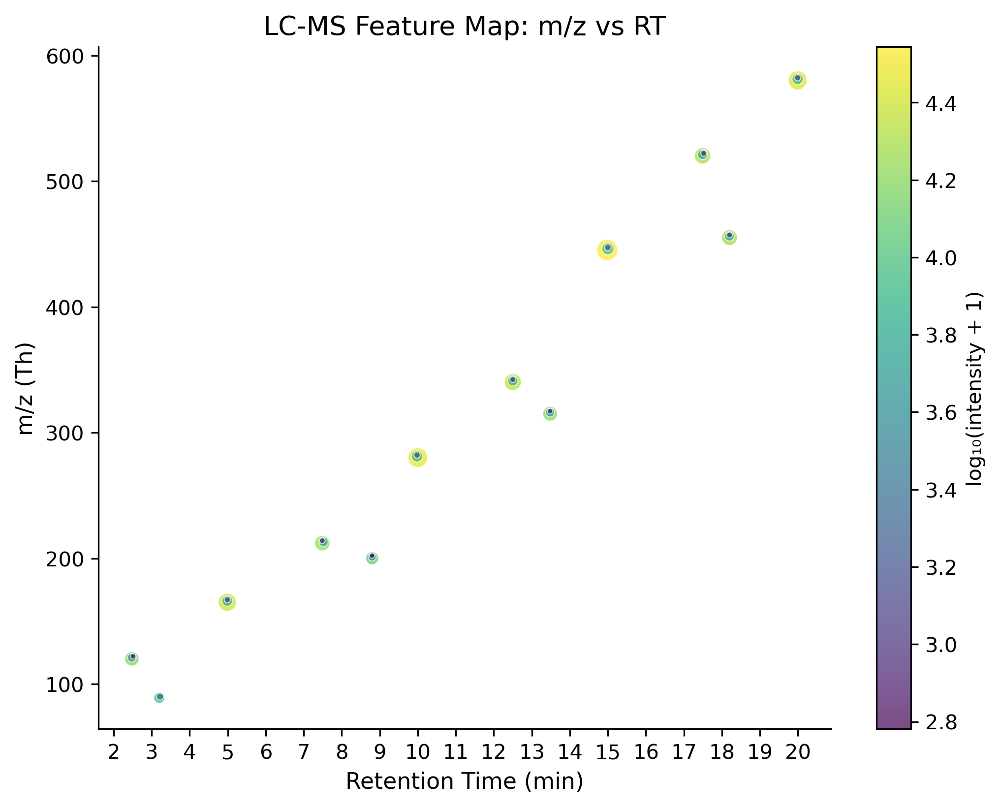
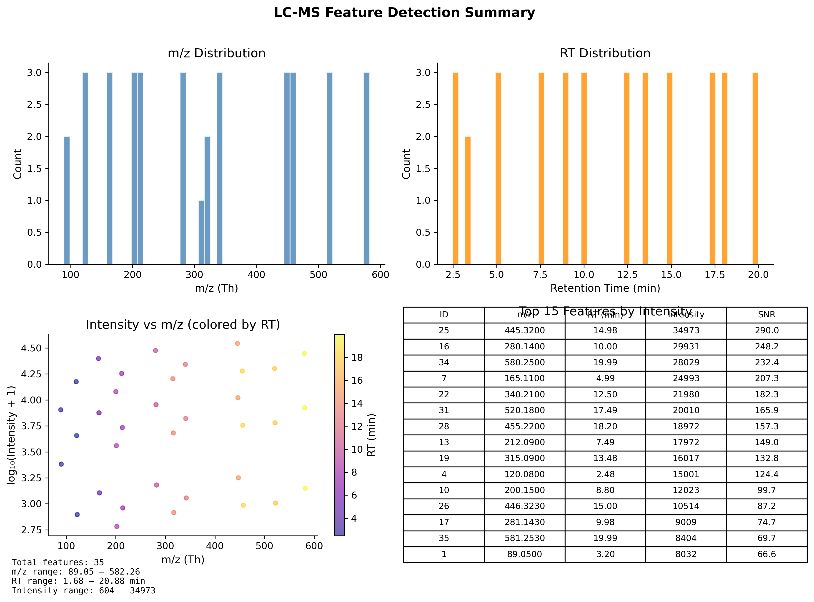
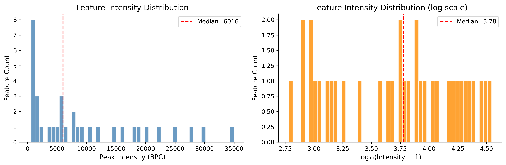
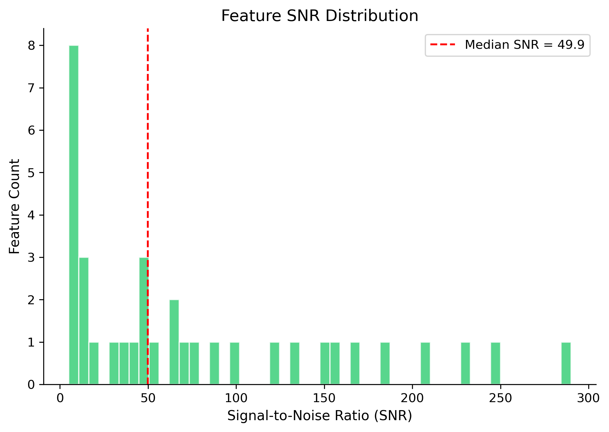
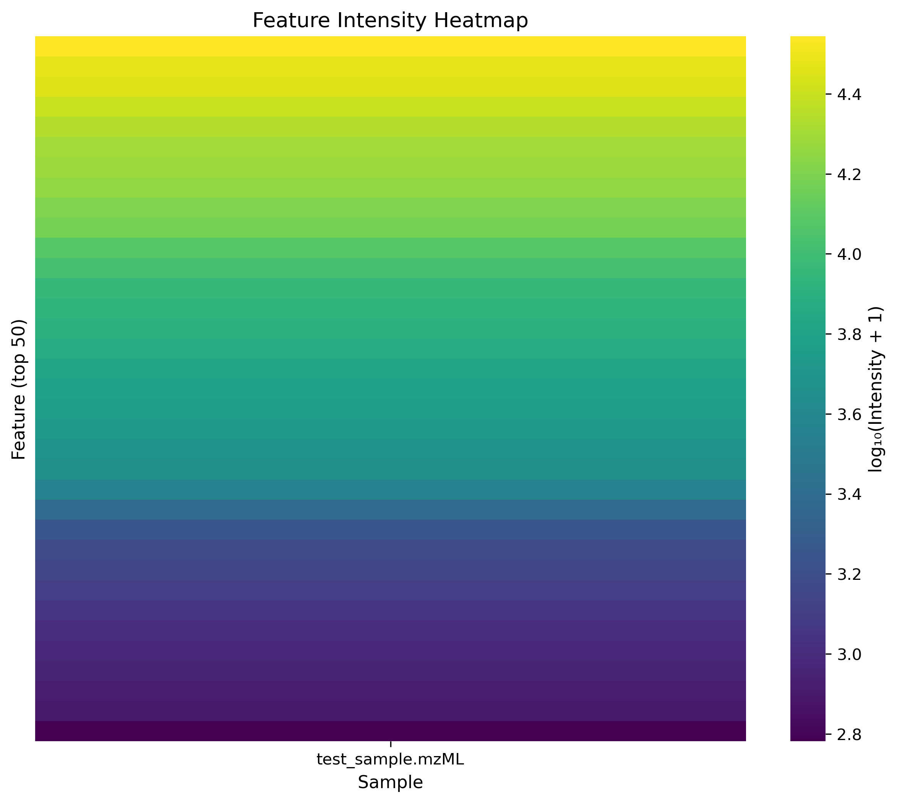

📊 样本概览与质控指标
✅ Peak detection completed successfully · 35 features detected from 1 synthetic mzML sample
35
检测到的特征峰
1
处理的文件数
89–582
m/z 范围 (Th)
2.5–20
保留时间 (min)
604–34,973
信号强度范围
5–290
信噪比 (SNR)
📋 数据集信息
| 数据类型 | Synthetic LC-MS mzML |
| 样本数 | 1 |
| 检测特征数 | 35 |
| m/z 范围 | 89.050 – 582.256 Th |
| 保留时间范围 | 2.48 – 19.99 min |
| 信号强度范围 | 604 – 34,973 (a.u.) |
| 信噪比范围 | 5.0 – 290.0 |
🔬 分析流程
Raw mzML
→
Peak Detection
→
Feature Alignment
→
Annotation (METLIN)
→
Visualization
工具：pymzml (mzML解析) · scipy (峰检测) · matplotlib/seaborn (可视化) · pandas (数据处理)
🔍 峰检测参数
峰检测算法：Local maxima detection (scipy.signal.find_peaks_cwt)
m/z 容差：0.005 Th (within scan)
RT 容差：0.1 min (across scan alignment)
最小 SNR：3.0
最小峰强度：100 a.u.
📈 可视化结果

图1: m/z vs 保留时间散点图
35 个检测特征在质荷比(m/z)和保留时间(RT)二维空间的分布

图2: 特征检测汇总面板
综合展示 TIC 轨迹、检测统计和特征分布

图3: 峰强度分布
信号强度直方图，强度范围 604–34,973 a.u.

图4: 信噪比分布
35 个特征的信噪比(SNR)分布，SNR 范围 5.0–290.0

图5: 特征丰度热图
样本间 35 个代谢特征的相对丰度聚类热图
🛠️ 分析脚本
1
peak_detection.py
XML mzML 解析 + scipy 峰检测 + 特征对齐
XML mzML 解析 + scipy 峰检测 + 特征对齐
2
export_mgf.py
MGF 格式导出 (GNPS FBMN 上传)
MGF 格式导出 (GNPS FBMN 上传)
3
visualize.py
5 种可视化图表生成
5 种可视化图表生成
4
annotate_metlin.py
METLIN 数据库本地注释
METLIN 数据库本地注释
5
download_gnps_data.py
GNPS/MassIVE/MetaboLights 数据下载
GNPS/MassIVE/MetaboLights 数据下载
6
generate_test_mzml.py
合成 LC-MS 测试数据生成器
合成 LC-MS 测试数据生成器